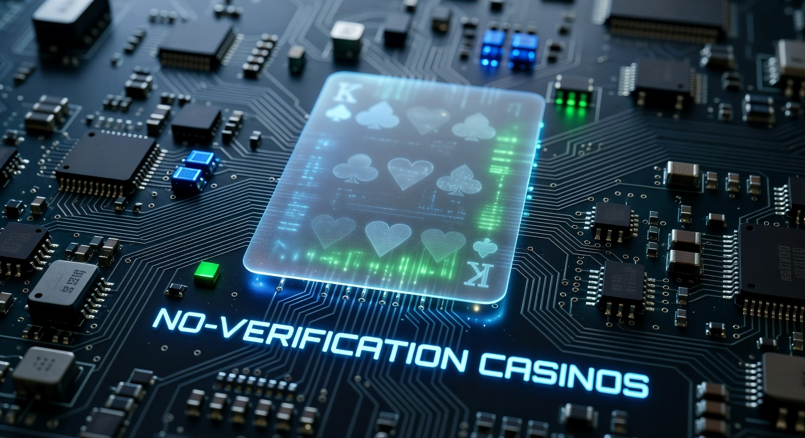
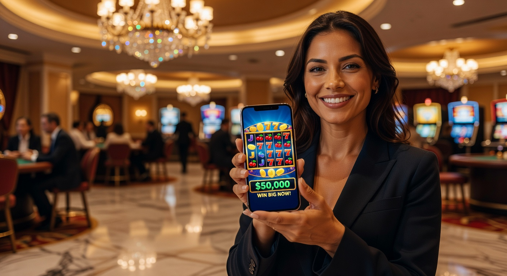
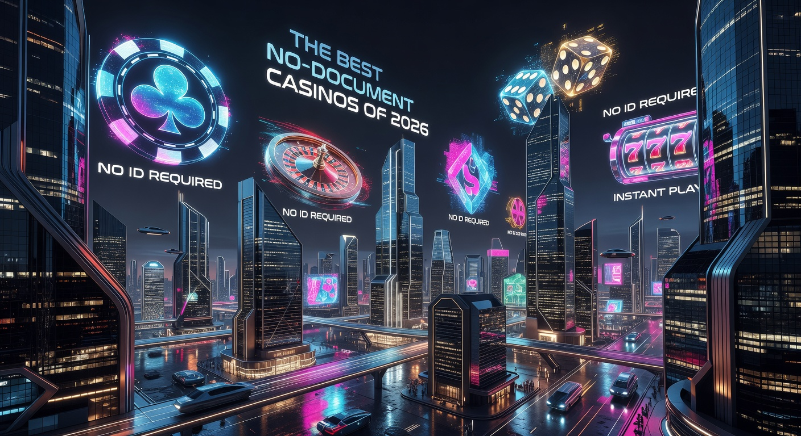
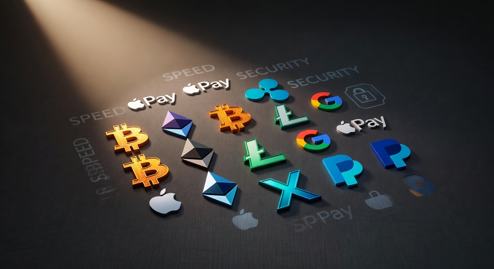

Casino senza documenti: Guida completa ai siti con registrazione immediata
Nel panorama del gioco digitale del 2026, l'efficienza e la rapidità sono diventate le colonne portanti dell'industria. Il concetto di casino senza documenti non è più una nicchia per pochi esperti, ma una realtà consolidata che risponde alle esigenze di una platea di utenti sempre più attenta alla privacy e desiderosa di eliminare i tempi morti. La capacità di accedere alle proprie slot preferite o ai tavoli live in pochi secondi, saltando le tediose attese burocratiche, ha rivoluzionato il modo in cui concepiamo l'intrattenimento online.
Questa evoluzione tecnologica permette oggi di gestire i propri fondi con una semplicità disarmante. Molti giocatori italiani cercano un'esperienza fluida che non richieda il caricamento di foto di documenti d'identità o bollette per la conferma della residenza. Attraverso l'uso di protocolli di autenticazione avanzati e l'integrazione di sistemi di pagamento intelligenti, il casino senza documenti garantisce un accesso sicuro e immediato, mantenendo standard di protezione elevatissimi.
In questa guida dettagliata, esploreremo come funzionano queste piattaforme nel 2026, quali sono i rischi, i vantaggi legali e come scegliere i portali più affidabili sul mercato internazionale. Approfondiremo le tecnologie che rendono possibile questo miracolo della User Experience, garantendo al contempo il rispetto delle normative vigenti sul gioco responsabile.
Cosa sono realmente i casino senza documenti?
Quando parliamo di un casino senza documenti, ci riferiamo a piattaforme di gambling che non richiedono l'invio proattivo di documenti cartacei o scansioni digitali durante la fase di iscrizione o, in alcuni casi, per i primi prelievi. Questi siti sfruttano metodi di identificazione "silenziosa" che avvengono tramite il fornitore di servizi di pagamento. In pratica, l'identità dell'utente è già stata verificata dalla banca o dal portafoglio elettronico, rendendo superflua una seconda procedura di verifica da parte dell'operatore di gioco.
È importante sottolineare che "senza documenti" non significa "senza regole". Al contrario, queste piattaforme operano spesso sotto licenze internazionali rigorose che impongono standard di sicurezza informatica estremi. L'obiettivo è minimizzare l'attrito tra l'utente e il gioco, trasformando quella che un tempo era una lunga attesa in un processo istantaneo. La rapidità è la parola d'ordine nel 2026, e i portali che non si adeguano a questo standard stanno perdendo quote di mercato significative a favore di operatori più agili.
Come funziona la tecnologia dietro il gioco senza verifica

La magia tecnologica che permette un gioco senza interruzioni burocratiche si basa su due pilastri fondamentali: i sistemi di pagamento "smart" e la blockchain. Nel 2026, l'interoperabilità tra sistemi bancari e piattaforme di intrattenimento ha raggiunto livelli di perfezione assoluti. Questo permette ai server dei casino di comunicare istantaneamente con gli istituti di credito per confermare l'età e la titolarità del conto senza che l'utente debba alzare un dito.
Inoltre, l'adozione di protocolli Open Banking ha facilitato la creazione di un ecosistema in cui il flusso di dati è protetto da crittografia end-to-end. Le piattaforme possono confermare che l'utente soddisfi i requisiti di legge semplicemente analizzando i token crittografati forniti dal metodo di pagamento scelto, garantendo così una esperienza di gioco fluida e priva di ostacoli tecnici.
Il sistema Pay N Play di Trustly
Uno dei pionieri di questa rivoluzione è stato Trustly, con la sua tecnologia Pay N Play. Questo sistema permette di depositare e giocare contemporaneamente. Quando effettui un deposito, Trustly trasmette i dati necessari (KYC) direttamente al casinò in background. Questo significa che il tuo account viene creato e verificato nel momento stesso in cui versi i fondi, eliminando la necessità di inviare scansioni d'identità manuali.
L'anonimato garantito dalle criptovalute
Un'altra tecnologia chiave nel 2026 è l'integrazione nativa delle criptovalute. Utilizzando asset come il Bitcoin, l'utente può interagire con il casino senza documenti mantenendo un alto livello di anonimato. Poiché le transazioni su blockchain sono verificate dalla rete stessa, il casinò non ha bisogno di conoscere ogni dettaglio privato dell'utente per processare un pagamento. Questo metodo è particolarmente apprezzato da chi mette la privacy al primo posto nella propria scala di valori digitali.
Vantaggi principali di scegliere un casino senza documenti

Scegliere un casino senza documenti nel 2026 offre benefici tangibili che vanno ben oltre la semplice comodità. Il primo vantaggio è indubbiamente la protezione contro il furto d'identità. Meno documenti carichi sui server di terze parti, minore è il rischio che i tuoi dati sensibili finiscano nelle mani sbagliate in caso di data breach. La sicurezza informatica è un tema caldo, e ridurre la propria superficie di esposizione digitale è una mossa saggia.
In secondo luogo, la velocità dei prelievi è imbattibile. Nei casinò tradizionali, la richiesta di prelievo spesso innesca una nuova procedura di verifica che può durare giorni. Nelle piattaforme no-KYC, il prelievo è spesso istantaneo o richiede pochi minuti, poiché l'identità è già stata validata tecnologicamente all'ingresso. Questo permette ai giocatori di disporre delle proprie vincite quasi in tempo reale, un requisito fondamentale per l'utente moderno.
Risparmio di tempo e iscrizione rapida
Il risparmio di tempo è quantificabile: si passa da una media di 48-72 ore per la verifica del conto a zero minuti. Non dovrai più cercare lo scanner o scattare selfie con il tuo passaporto in mano. Questa immediatezza rende il gioco senza stress ideale per chi ha poco tempo a disposizione e vuole dedicarsi esclusivamente al divertimento puro senza intoppi amministrativi.
Privacy e sicurezza dei dati personali
In un'epoca in cui la profilazione digitale è onnipresente, mantenere un certo grado di riservatezza è un lusso. I casino senza documenti minimizzano la raccolta di dati non essenziali. Questo approccio "privacy by design" è in linea con le moderne sensibilità degli utenti IT, che preferiscono non condividere informazioni personali superflue con portali di gioco internazionali, affidandosi invece alla sicurezza crittografica dei propri wallet o conti bancari.
I migliori siti per giocare senza invio di documenti nel 2026

Il mercato attuale offre diverse opzioni di alta qualità. Abbiamo selezionato alcuni dei portali più performanti che offrono un'esperienza utente eccellente, bonus generosi e, soprattutto, la possibilità di operare come casino senza documenti per la maggior parte delle transazioni. Ogni brand sotto riportato è stato testato per affidabilità, velocità di pagamento e varietà di giochi disponibili.
| Brand | Vantaggio Principale | Link Sicuro |
|---|---|---|
| Millioner | Programma VIP esclusivo | Visita Millioner |
| Roulettino | Specializzato in tavoli Live | Visita Roulettino |
| Wyns | Bonus di benvenuto elevato | Visita Wyns |
| Kinbet | Ottimo per scommesse e slot | Visita Kinbet |
| Dragonia | Interfaccia grafica 2026 | Visita Dragonia |
Oltre a questi leader di mercato, esistono altre realtà emergenti che meritano attenzione per la loro capacità di innovare nel settore del casino senza documenti. Piattaforme come Wildtokyo Casinò e Astromania Casinò si distinguono per la loro integrazione totale con i pagamenti in criptovaluta. Anche Diva Spin Casinò e Lunubet Casinò offrono percorsi di registrazione semplificati, ideali per chi cerca un'esperienza immediata. Non dimentichiamo Spinempire Casinò e Boomerangbet Casino, che hanno introdotto nel 2026 sistemi di gamification avanzati per premiare la fedeltà dei giocatori senza richiedere continui controlli burocratici.
Aspetti legali e licenze internazionali: cosa devi sapere
Operare in un casino senza documenti non significa agire nell'illegalità. Tuttavia, è fondamentale comprendere la distinzione tra le diverse licenze. In Italia, l'ADM (Agenzia delle Dogane e dei Monopoli) richiede per legge la verifica dei documenti entro 30 giorni dall'iscrizione. Pertanto, la maggior parte dei siti che permettono un gioco senza invio di documenti operano sotto licenze internazionali, che sono comunque legali a livello globale ma seguono normative differenti.
Questi operatori scelgono giurisdizioni che permettono modelli di business più agili, pur garantendo la protezione dei fondi degli utenti e l'equità dei giochi (tramite RNG certificati). È essenziale verificare che il sito scelto possieda una licenza valida prima di depositare. Le licenze internazionali più comuni nel 2026 includono quelle rilasciate da autorità rispettate che monitorano costantemente l'operato dei casino per prevenire frodi o comportamenti scorretti.
La differenza tra licenza ADM e licenze estere (Curacao, MGA)
La licenza italiana ADM è focalizzata sul controllo capillare del territorio e sulla tassazione alla fonte, imponendo protocolli KYC (Know Your Customer) molto rigidi. Al contrario, la Malta Gaming Authority (MGA) e la Curaçao eGaming permettono una flessibilità maggiore, consentendo agli operatori di implementare tecnologie come Pay N Play. Esiste anche la UK Gambling Commission, nota per la sua severità, che sta iniziando a valutare l'integrazione di sistemi di verifica automatizzata per allinearsi alla tendenza del 2026 verso la semplificazione burocratica.
Metodi di pagamento consigliati per la massima rapidità

Per sfruttare appieno un casino senza documenti, la scelta del metodo di pagamento è determinante. Non tutti i sistemi supportano la verifica automatica. Nel 2026, i portafogli elettronici e le banche digitali sono i canali preferenziali. Utilizzare una carta di credito tradizionale potrebbe a volte innescare controlli antifrode manuali, vanificando il vantaggio della velocità. Al contrario, sistemi nati per il web garantiscono transazioni fulminee.
Tra le opzioni più valide troviamo Trustly, che rimane lo standard per il modello Pay N Play. Ma non sono da sottovalutare le stablecoin e altre valute digitali che permettono di spostare grandi volumi di gioco in totale sicurezza. Ricorda che la velocità di prelievo dipende quasi sempre dalla combinazione tra l'efficienza del casinò e il protocollo del metodo di pagamento scelto. Optare per soluzioni moderne è il modo migliore per vivere un'esperienza senza intoppi.
- Criptovalute: Bitcoin, Ethereum e USDT per l'anonimato e la velocità decentralizzata.
- E-wallets: Revolut, Skrill e Neteller, spesso integrati con sistemi di verifica rapida.
- Open Banking: Bonifici istantanei che sfruttano le API bancarie moderne.
- Carte Virtuali: Per una sicurezza aggiuntiva e una gestione granulare del budget.
Tipologie di bonus disponibili senza convalida del conto
Molti giocatori temono che un casino senza documenti non offra promozioni competitive. La realtà del 2026 smentisce questo mito. Al contrario, per attirare utenti in un mercato molto dinamico, queste piattaforme offrono bonus di benvenuto estremamente generosi. Spesso è possibile riscattare un bonus sul primo deposito o ricevere dei giri gratuiti semplicemente completando l'iscrizione rapida e confermando il proprio numero di telefono o email.
Oltre al classico bonus sul deposito, è frequente trovare offerte di cashback settimanale, che restituiscono una percentuale delle perdite nette. Questo tipo di bonus è particolarmente apprezzato nei portali no-KYC perché non richiede lunghe procedure di attivazione. Una volta terminata la sessione, il cashback viene accreditato automaticamente sul conto, pronto per essere rigiocato o prelevato istantaneamente.
Un elemento distintivo di molti siti internazionali moderni è il Bonus Crab, una funzione di gamification che permette di ottenere premi extra (come bonus cash o free spins) partecipando a mini-giochi integrati. Questa meccanica rende l'esperienza di gioco molto più coinvolgente rispetto ai casinò tradizionali che si limitano a offrire percentuali fisse di ricarica.
Quali giochi trovi sulle piattaforme no-KYC?
L'offerta ludica di un casino senza documenti nel 2026 non ha nulla da invidiare ai colossi del settore. Le librerie di giochi sono fornite dai migliori software provider mondiali come NetEnt, Evolution Gaming, Pragmatic Play e Microgaming. La qualità dei titoli è eccellente, con grafiche in alta definizione e meccaniche di gioco innovative. Che tu sia un amante delle slot classiche o dei moderni show televisivi live, troverai pane per i tuoi denti.
La fluidità tecnologica di queste piattaforme si riflette anche nei tempi di caricamento dei giochi. Essendo ottimizzati per la velocità, questi siti utilizzano motori leggeri che permettono di passare da una slot all'altra in frazioni di secondo. La varietà è tale da soddisfare ogni tipologia di giocatore, dai "casual gamers" ai professionisti che cercano tavoli con limiti di puntata elevati.
Slot machine e jackpot progressivi
Le slot machine sono il cuore pulsante di ogni casino senza documenti. Nel 2026, le slot con meccanica "Megaways" e i jackpot progressivi che superano i milioni di euro sono all'ordine del giorno. Molte di queste slot includono round bonus complessi e funzioni di acquisto bonus (Bonus Buy), permettendo ai giocatori di entrare direttamente nel vivo dell'azione senza attendere la combinazione vincente sui rulli.
Tavoli dal vivo con croupier reali
Per chi cerca l'emozione di un vero casinò di Las Vegas, la sezione "Live" è imprescindibile. Qui puoi trovare tavoli di Roulette, Blackjack e Baccarat gestiti da croupier professionisti in streaming 4K. La tecnologia dei casino senza documenti permette di interagire in chat con il dealer e gli altri giocatori, creando un'atmosfera sociale e immersiva che rende la tua esperienza di gioco unica nel suo genere.
Consigli per una scelta sicura e consapevole
Sebbene il 2026 offra tecnologie avanzate, la prudenza non è mai troppa. Quando selezioni un casino senza documenti, assicurati di leggere sempre i termini e le condizioni (T&C). Anche se non richiedono documenti subito, alcuni siti potrebbero richiederli in caso di vincite eccezionalmente alte o per controlli di routine anti-riciclaggio. Sapere in anticipo quali sono le regole del gioco ti eviterà sorprese sgradevoli al momento di incassare.
Verifica inoltre la reputazione del brand sui forum di settore e sui siti di recensioni indipendenti. Un operatore serio offre sempre un servizio clienti raggiungibile e trasparente. Non farti abbagliare solo dal bonus più alto, ma valuta la solidità complessiva della piattaforma. Un buon indicatore è la presenza di strumenti per il gioco responsabile, che dimostrano l'impegno dell'operatore verso la tutela della salute mentale e finanziaria dei propri utenti.
888Casino e l'evoluzione del mercato regolamentato
Non possiamo parlare di evoluzione del gioco online senza menzionare giganti come 888Casino. Sebbene storicamente legato alle procedure di verifica classiche, anche questo operatore ha dovuto adattarsi alle richieste di velocità del 2026. Molti dei grandi brand stanno implementando sistemi di verifica biometrica o integrazioni con l'identità digitale nazionale (come lo SPID in Italia) per competere con l'agilità del casino senza documenti internazionale.
L'influenza di questi colossi ha spinto le autorità di regolamentazione a riconsiderare l'eccessiva burocrazia, cercando un equilibrio tra sicurezza e usabilità. Il risultato è un mercato ibrido dove anche i siti con licenza ADM stanno diventando molto più rapidi, sebbene rimangano legati a vincoli legislativi che i siti no-KYC riescono a superare con maggiore naturalezza.
WinBet e l'alternativa internazionale
Un altro nome di rilievo nel panorama globale è WinBet. Questo operatore ha saputo cavalcare l'onda dei casino senza documenti offrendo una piattaforma cross-border che accetta giocatori da diverse giurisdizioni con requisiti di ingresso minimi. La loro forza risiede in un'interfaccia utente pulita e in un sistema di pagamenti che privilegia l'immediatezza.
Siti come WinBet rappresentano la scelta ideale per chi vuole evadere dalle restrizioni talvolta soffocanti dei mercati locali, preferendo un approccio più liberale ma comunque protetto da sistemi di crittografia di livello bancario. La concorrenza tra questi operatori internazionali giova all'utente finale, che vede costantemente migliorare la qualità dei servizi e la generosità delle promozioni.
L'importanza del Bonus Crab nelle nuove piattaforme
Come accennato in precedenza, il Bonus Crab è diventato un elemento essenziale nel 2026. Questa funzione, presente in molte piattaforme all'avanguardia, permette ai giocatori di utilizzare un artiglio meccanico virtuale per pescare premi. È una dimostrazione di come il casino senza documenti non si limiti a eliminare la burocrazia, ma cerchi costantemente nuovi modi per intrattenere l'utente.
Ottenere un tentativo al Bonus Crab è solitamente legato a un deposito minimo. Poiché non c'è bisogno di attendere la verifica manuale del conto, puoi depositare, ricevere il tuo credito e tentare subito la fortuna con l'artiglio per vincere fondi bonus o giri gratuiti aggiuntivi. È questa immediatezza che rende il gioco moderno così eccitante e dinamico.
La sicurezza crittografica e le criptovalute
La spina dorsale di un casino senza documenti sicuro nel 2026 è la crittografia SSL a 256 bit, unita a protocolli di sicurezza blockchain. L'integrazione di wallet digitali permette transazioni che non espongono i dati bancari principali del giocatore. Questo "cuscinetto" di sicurezza è fondamentale per prevenire frodi e attacchi informatici.
L'uso di criptovalute non è solo una questione di privacy, ma anche di efficienza finanziaria. Le commissioni di transazione sono spesso inferiori rispetto ai metodi tradizionali, e l'assenza di intermediari bancari significa che il casinò può permettersi di offrire quote migliori e bonus più ricchi. Nel 2026, saper gestire un wallet crypto è diventata una competenza preziosa per ogni appassionato di gambling online che cerca il massimo dal proprio budget.
Esperienza mobile nei portali immediati
Oltre l'80% delle sessioni di gioco nel 2026 avviene tramite dispositivi mobili. Un casino senza documenti deve quindi offrire un'interfaccia mobile-first impeccabile. Che si tratti di un'app dedicata o di una web-app ottimizzata, la facilità di navigazione e la velocità di esecuzione sono critiche. L'utente vuole poter aprire il proprio smartphone, autenticarsi tramite FaceID o impronta digitale, e iniziare a giocare in meno di dieci secondi.
Le piattaforme che abbiamo menzionato, come VegasHero Casinò e Wonderluck Casinò, eccellono in questo ambito. Hanno rimosso ogni attrito grafico, permettendo una gestione del conto e delle giocate fluida anche su connessioni non stabili. La possibilità di depositare tramite Apple Pay o Google Pay con un semplice tocco rende l'esperienza di gioco senza barriere una realtà quotidiana per milioni di utenti IT.
Assistenza clienti e supporto tecnico 2026
Un aspetto spesso sottovalutato ma vitale è il supporto tecnico. Anche in un casino senza documenti, possono sorgere dubbi o piccoli intoppi tecnici. Nel 2026, l'assistenza è dominata da AI multilingue capaci di risolvere la maggior parte dei problemi istantaneamente in chat live. Tuttavia, la presenza di operatori umani per i casi più complessi rimane un marchio di qualità.
I migliori siti offrono supporto 24/7, garantendo che ogni giocatore possa ricevere aiuto in tempo reale, indipendentemente dal fuso orario. Questa affidabilità è ciò che distingue un operatore mediocre da un leader di mercato. Prima di investire somme significative, è sempre buona norma testare la reattività della chat live ponendo una domanda semplice sui tempi di prelievo o sulle condizioni di un bonus.
Gioco responsabile e strumenti di autotutela
La velocità e la facilità di accesso di un casino senza documenti non devono far passare in secondo piano l'importanza del gioco responsabile. Anche se le procedure di iscrizione sono snelle, i portali seri offrono sempre strumenti per limitare i depositi, le perdite o il tempo trascorso online. L'auto-esclusione deve essere un'opzione facilmente accessibile in ogni momento.
L'industria nel 2026 ha fatto passi da gigante nel rilevare comportamenti di gioco compulsivo tramite algoritmi predittivi. Questi sistemi possono avvisare l'utente se la sua attività suggerisce un rischio di dipendenza, promuovendo un approccio ludico sano e sostenibile. Ricordate sempre che il gambling deve essere una forma di divertimento, non un modo per risolvere problemi finanziari. Per ulteriori informazioni sulla tutela dei giocatori, è possibile consultare risorse autorevoli come Wikipedia sul gioco responsabile.
Il futuro del gambling online: oltre il 2026
Cosa ci aspetta dopo il 2026? La tendenza verso l'eliminazione dei documenti continuerà a rafforzarsi, probabilmente con l'integrazione di sistemi di identità sovrana (Self-Sovereign Identity) basati su blockchain. Questo permetterà agli utenti di possedere i propri dati di verifica e condividerli temporaneamente con il casino senza documenti tramite una "prova a conoscenza zero" (Zero-Knowledge Proof), garantendo il 100% di privacy e il 100% di conformità legale contemporaneamente.
Anche la realtà virtuale (VR) e aumentata (AR) diventeranno standard, trasformando la lobby del casinò in uno spazio tridimensionale dove potrai camminare tra i tavoli e interagire con altri giocatori in modo ancora più naturale. La sfida per gli operatori sarà mantenere l'immediatezza del gioco senza complicazioni in ambienti tecnologici sempre più sofisticati.
Conclusioni sulla nuova frontiera del gioco online
In conclusione, il casino senza documenti rappresenta la naturale evoluzione di un mercato che mette l'utente al centro. La combinazione di privacy, velocità e sicurezza tecnologica rende queste piattaforme estremamente attraenti per il giocatore moderno del 2026. Abbiamo visto come l'integrazione di sistemi come Pay N Play e le criptovalute abbia eliminato le vecchie barriere all'ingresso, rendendo l'esperienza fluida e piacevole.
Tuttavia, la libertà comporta responsabilità. Scegliere siti con licenze internazionali valide, monitorare le proprie abitudini di spesa e informarsi costantemente sulle novità del settore sono passaggi fondamentali per godersi il gioco in totale serenità. Che tu scelga Millioner, Dragonia o una delle altre piattaforme consigliate, l'importante è approcciarsi a questo mondo con consapevolezza e desiderio di puro intrattenimento digitale.
Domande Frequenti (FAQ)
È legale giocare in un casino senza documenti in Italia?
Sebbene la normativa ADM richieda l'invio del documento, molti giocatori italiani scelgono legalmente operatori internazionali con licenze estere (MGA o Curacao) che offrono procedure semplificate. È importante verificare la validità della licenza del sito scelto.
Quali sono i tempi di prelievo in questi casinò?
In un casino senza documenti, i prelievi sono solitamente molto più rapidi rispetto ai siti tradizionali. Utilizzando criptovalute o Trustly, i fondi possono arrivare sul tuo conto istantaneamente o entro poche ore dalla richiesta.
Posso ottenere un bonus di benvenuto senza inviare documenti?
Assolutamente sì. La maggior parte di queste piattaforme accredita il bonus di benvenuto e i giri gratuiti immediatamente dopo il primo deposito, senza richiedere la convalida manuale dell'identità tramite documenti cartacei.
La mia privacy è davvero protetta?
Sì, poiché questi siti minimizzano la raccolta di dati personali sensibili. Utilizzando tecnologie crittografiche e metodi di pagamento intermedi, le tue informazioni bancarie e d'identità rimangono private e protette da potenziali intrusioni esterne.

Esperto di casino online e gioco d'azzardo digitale con oltre 8 anni di esperienza nel settore.